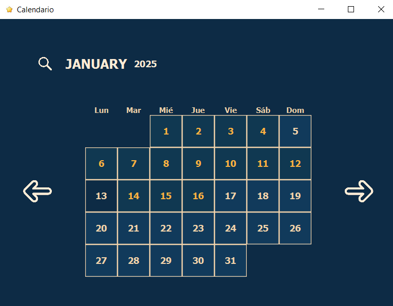
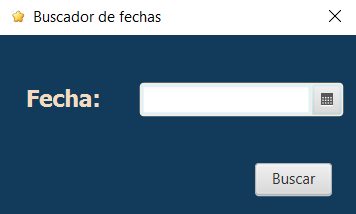
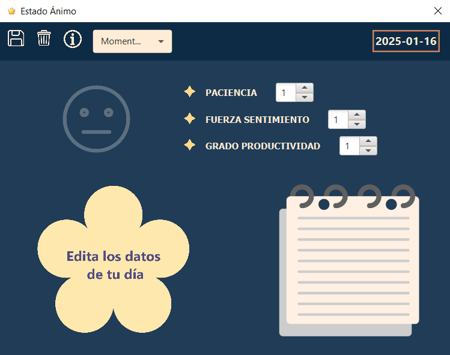
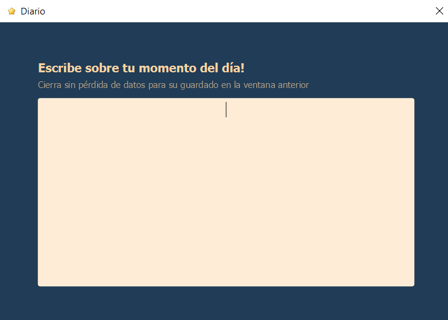
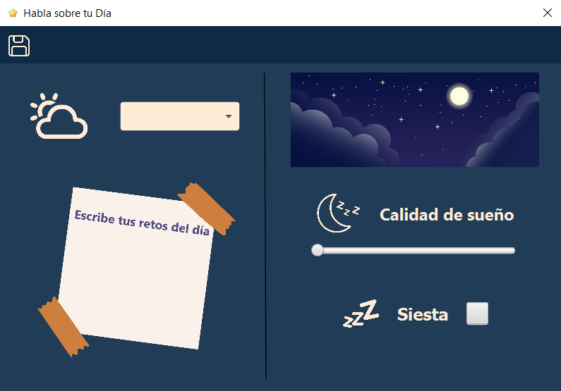
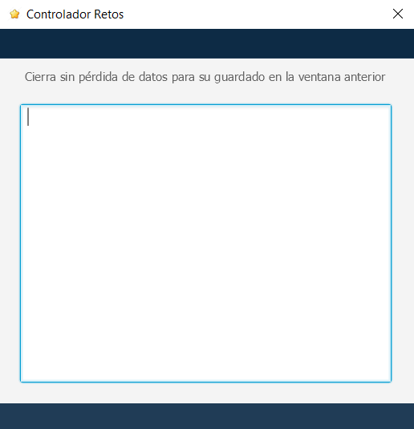

Objetivos del Manual
Este manual tiene como finalidad ofrecerle una guía detallada para el correcto uso de la aplicación "Diario". Esta herramienta ha sido diseñada para permitirle registrar sus experiencias diarias de manera organizada, facilitando la descripción de los momentos de su mañana, tarde y noche, así como la evaluación de su estado emocional durante estos periodos. A través de esta aplicación, podrá llevar un seguimiento de su bienestar y reflexionar sobre su jornada.
Índice de Contenidos
- Pantalla Principal
- Pantalla de Búsqueda de Fecha
- Pantalla de Estado de Ánimo
- Pantalla de Diario
- Pantalla de Datos del Día
- Pantalla de Retos
* Descripción del Funcionamiento
Funcionamiento de la Aplicación
A continuación, encontrará una descripción detallada de las principales pantallas y funciones de la aplicación. Estas instrucciones están pensadas para guiarle paso a paso en el uso adecuado de cada sección.
1. Pantalla Principal
Al ingresar a la aplicación, accederá automáticamente a la pantalla principal, que presenta el calendario para seleccionar el día que desea consultar o registrar. A continuación, se detallan las acciones que puede realizar en esta pantalla: 
- Seleccione el día que desea consultar o registrar tocando directamente sobre la fecha deseada.
- El ícono de la lupa le permitirá realizar una búsqueda específica de una fecha al hacer clic en él.
- Utilice las flechas de navegación para desplazarse entre meses, tanto hacia adelante como hacia atrás.
2. Pantalla de Búsqueda de Fecha
Al hacer clic en el ícono de la lupa, accederá a la pantalla de búsqueda de fechas, donde podrá seleccionar el día que desea consultar: 
- El botón "Buscar" le llevará directamente al día seleccionado, siempre que haya escogido una fecha válida en el selector de fechas (DatePicker).
3. Pantalla de Estado de Ánimo
Al seleccionar un día desde la pantalla principal, accederá a la pantalla de Estado de Ánimo, donde podrá evaluar cómo se sintió a lo largo del día: 
- Puede hacer clic sobre el ícono de emoji para acceder a la pantalla de selección de emociones.
- También podrá ajustar los datos utilizando los spinners disponibles para diversos aspectos de su día.
- Si lo desea, puede hacer clic sobre el ícono del bloc para acceder a la pantalla de Diario.
- La opción "Editar Datos" le permitirá modificar los detalles del día seleccionado desde la pantalla de Datos del Día.
- Los botones "Guardar", "Borrar" e "Informes" le permitirán gestionar sus registros y generar informes.
- A través del spinner, podrá elegir el momento del día que desea registrar (mañana, tarde, noche).
4. Pantalla de Diario
Si decide hacer clic en el ícono del bloc desde la pantalla de Estado de Ánimo, accederá a la pantalla de Diario, donde podrá escribir sus pensamientos y vivencias del día: 
- En el campo de texto, podrá escribir libremente sobre su día. Los datos que registre se guardarán automáticamente y estarán disponibles para su posterior consulta y modificación en la pantalla de Estado de Ánimo.
5. Pantalla de Datos del Día
Al hacer clic en "Editar Datos del Día" desde la pantalla de Estado de Ánimo, accederá a la pantalla de Datos del Día, donde podrá modificar diversos aspectos relacionados con su jornada: 
- Puede seleccionar el clima del día utilizando el spinner correspondiente.
- También podrá indicar qué tan bien ha dormido mediante un control deslizante.
- Si lo desea, podrá marcar si ha tomado una siesta en el día.
- Al hacer clic en "Escribir Retos", podrá acceder a la pantalla para agregar nuevos retos.
6. Pantalla de Retos
Si decide agregar retos a su jornada, podrá hacerlo a través de la pantalla de Retos. Al hacer clic en el ícono de "Añadir Retos" desde la pantalla de Datos del Día, accederá a esta sección: 
- En el campo de texto, podrá escribir los retos que se propuso para ese día. Los datos se guardarán automáticamente para su consulta futura en la pantalla de Datos del Día.